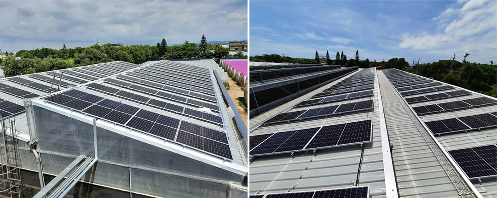

推薦浪型
比較全部 11 種浪型 →
三款浪型涵蓋大多數溫室


為什麼選 PC 採光浪板

比玻璃堅固，比 PVC 耐用
PC 採光浪板已是全球農業溫室覆蓋材料的首選。玻璃易碎又重，一般 PVC 板會黃變龜裂；PC 浪板則在一片板材裡同時具備耐衝擊、輕量好施工與長期清透。
立洋的板材表面有共擠 UV 保護層，防止日曬劣化，多年戶外使用仍維持穩定的透光率。
| 效益 | 說明 |
|---|---|
| 透光率最高 90% | 透明板讓自然光最大化；擴散板把光線均勻散開，適合敏感作物 |
| 高耐衝擊 | 遠比玻璃或 PVC 堅固 — 耐冰雹、強風與大雨 |
| 輕量、好安裝 | 重量只有玻璃的一小部分；一般工具即可裁切，適用各種標準骨架 |
| 可彎成拱形 | 可橫向於浪紋彎曲 — 隧道式與拱形骨架的理想選擇 |
| 共擠 UV 保護 | 內建 UV 層防止黃變，10 年以上維持清透 |
| 排水順暢 | 浪型把雨水導離屋頂，降低暴雨時的載重 |
| 成本效益高 | 單層結構在溫和與亞熱帶氣候下極具價值 |
透明還是擴散？
您的作物適合哪一種
| 項目 | 透明 PC 浪板 | 擴散 PC 浪板 |
|---|---|---|
| 透光率 | 最高 90% | 65–80%（依產品） |
| 光線分布 | 直射 / 集中 | 散射 / 均勻 |
| 適合 | 畜舍、禽舍、一般屋頂 | 蔬菜、蘭花、花卉、育苗 |
| 植株陰影 | 可能有熱點 | 幾乎無陰影，均勻覆蓋 |
| UV 保護 | 共擠 UV 層 | 共擠 UV 層 |
葉菜、蘭花與育苗建議用擴散板。立洋在台灣的安裝案例顯示，擴散板取代透明板後，作物生長與產量均勻度有可量測的改善。
擴散板實際使用

光線均勻，不燒葉

UV-PC 隔熱擴散浪板把陽光均勻分布、阻隔有害的 UVA（320–400 nm），並將部分 270–380 nm 波段轉換為有利生長的紅光（620–670 nm）。
工程照片
全部 40 件溫室工程 →
遍布台灣農場的安裝實績


成功案例
太陽能溫室 — 桃園香草栽培擴散板做到 50–70% 遮光，生長週期加快、提早採收。
雲林蔬菜栽培區多連棟溫室的葉菜，全區光線均勻。
台南禽舍堆肥場有遮蓋的作業區，下雨天照常運作。
農友實際量到的成果
太陽能溫室 — 桃園香草栽培擴散板做到 50–70% 遮光，生長週期加快、提早採收。
雲林蔬菜栽培區多連棟溫室的葉菜，全區光線均勻。
台南禽舍堆肥場有遮蓋的作業區，下雨天照常運作。
常見問題
溫室常見問題
PC 採光浪板溫室能用多久？
正確安裝下可用 10 年以上。共擠 UV 層防止黃變，透光率長期維持。
可以裁成客製尺寸嗎？
可以 — 用細齒圓鋸或線鋸即可裁切整齊，任何骨架形狀都能配合，包含拱形結構。
會擋掉對植物有害的紫外線嗎？
UV 層阻隔造成劣化的波段，同時讓光合作用需要的全光譜可見光通過。
透明和擴散要選哪個？
畜舍、禽舍選透明；蔬菜、蘭花與需要均勻無陰影光線的敏感作物選擴散板。
適合弧形或拱形屋頂嗎？
適合。浪板可橫向彎曲。MINI 小浪（L8）最適合較小半徑的彎弧。
屋頂和側牆可以都用嗎？
可以 — 許多立洋案例屋頂與側牆都用 PC 浪板，整棟採光一致。
溫室報價
把溫室尺寸告訴我們
屋頂面積、骨架形式（拱形或山形）與作物。我們推薦浪型、厚度與顏色，2 個工作天內報價。